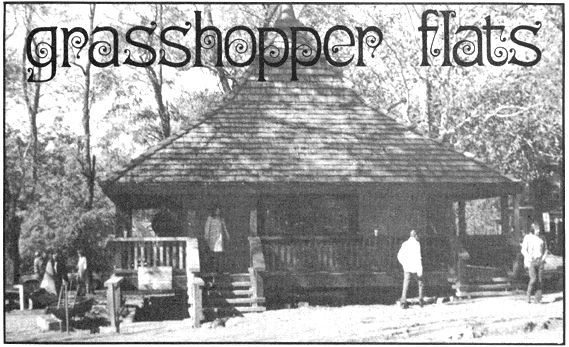
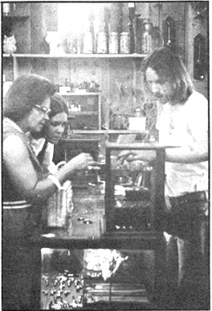

Grasshopper Flats
It's certainly nice to make a satisfying living while "playing" at the hobby you enjoy.
By Jack McClintock
May/June 1972
Donn Stoffer left Brown County, Indiana rather hastily in 1962. In an orgy of youthful exuberance he had siphoned some gasoline from a school bus, and a judge had suggested that Donn might prefer life in the U.S. Navy to life in the county jail.
Today, Donn is 27 and back in Brown County. Thanks to that judge he's a veteran, and thanks to himself he's one of the most successful-and independent-businessmen in Nashville, Indiana.
Donn minds a store called Grasshopper Flats, which has paid for itself five times over in the last year and now owns an inventory worth $15,000. The same business establishment has made Donn Stoffer the third largest retail depositor in the local bank and is the main reason that Donn and his wife, Joyce, now live the Good Life on a nearby 190-acre farm where they're 75% self-sufficient ("We do everything by MOTHER").
In short, Donn Stoffer has freed himself from the system and now lives as he likes . . . and he says that you can do it too. There are many ways to accomplish this end but if you want to do it the way he did it, Donn says you should start by choosing a place.
The place Donn chose was Nashville . . . partly because it's his home and partly because it's an art colony. Because of that second reason, Nashville-even though it's a small town (about 800 souls)-draws tourists from the Big Cities. And that's why the tiny Indiana town can support Grasshopper Flats-a combination head shop and crafts store-in such royal fashion. The right small town, in other words, can be a better location for a New Life shop than most large cities. The secret? No competition.
The second ingredient you'll need as you brew up your heady new way of living, according to Donn, is "an idea, not money". Donn's idea was jewelry (since he happened to be a silversmith) . . . which meant he automatically had something to sell. But Stoffer didn't stop there and you probably shouldn't either. He combined silver with other crafts (brought in on consignment) with head shop gear with a MOTHER dealership. "Diversification", the Captains of Industry would call it.
And then of course, yes, you will need some money . . . but not much. Donn started small, with just a few hundred dollars. A silversmith, you see, equipped with only a pounding block, ballpeen hammer and pliers can magically transform $100 worth of wire into pieces of jewelry that will sell at colleges and stores for maybe $400. If he then invests the entire $400 in more wire and repeats the process all over again . . . he'll have enough cash to start his own store! And Donn did.
Donn was lucky when he located his shop . . . it's right on Main Street and surrounded by other attractive small business establishments that invite visitors and tourists to stop and browse. Donn was double-lucky: his is the most striking building on the street . . . so he laid down his $200 rent, laid in some more silversmithing supplies and began to scavenge old showcases.
Stoffer picked up his shop's fixtures at junk shops. He also found some of his merchandise there (you can paint junk, make jewelry out of it or turn it into sculpture . . . and sell it ).
Donn also filled his mini-emporium by spreading word that he'd accept craft items on consignment at "the lowest possible markup" . . . about 25%. Such an anti-greed business philosophy, Stoffer soon found, gave his contributor-craftsmen a good feeling of participation and prosperity while making his customers feel they were buying handmade items at bargain prices. That's the way to develop volume.
Volume indeed! Strange as it may seem, one potter actually sells more of his work through Grasshopper Flats than through his own store right across the street. Why? Well . . . if your shop is stuffed with the work of many craftsmen, you've got yourself a one-stop shopping bazaar. Folks who wander in to see a belt walk out-like as not-with a belt, a pair of earrings, a painting on an old barn board, a jar of preserves and a copy of MOTHER.

Donn and Joyce sell paintings, macrame, leatherwork, metalwork, pottery, clothing, apple butter, pumpkin butter, honey, beaded chokers, sterling silver rings, roach clips, pipes, knitted dresses, ponchos, scarves, hats, collages, tie-dyed items, candles and lots and lots more. Grasshopper Flats thus becomes a place for freaks (the tape deck was playing Sly and the Family Stone the day we stopped in) and for straights (a matronly lady was inspecting jewelry between side glances at Donn's rather luxuriant hair).
At first, Stoffer took anything on consignment he could get. . . just to fill out the bare corners of his new store. "In the beginning," he says, "the thing to do is to get your shop open, the people coming and the income flowing. Don't start out with just junk or no one will ever come back . . . but do be prepared to accept somewhat less than an ideal selection of consignment goods. Strike a fine balance. Once your new enterprise is safely launched you can begin improving your stock."
Now that Grasshopper Flats has come of age, Donn's policy of upgrading the merchandise sold in the store is clearly apparent. Unlike schlock-shops-where one glance tells you there's nothing in the place you want-Grasshopper Flats invites you to take your time and look around at everything . . . because most items in stock are fine work. "Now, if a craftsman brings in something of poor workmanship, we tell him what's wrong with the piece, urge him to fix it and encourage him to bring it back. We're constantly trying to enrich the store with things that look good."
The consignment merchandise is also expected to pay for its space and Donn says he's figured out a formula for computing the exact markup he must receive on each item. The formula varies with overhead, however, and what works for Grasshopper Flats won't work for anyone else . . . so Donn advises you to calculate your own sliding scale. Just remember that you don't want to rip off your customers and you certainly don't want to rip off your craftsmen-suppliers (many of whom will be your friends).
A major secret of Donn Stoffer's success is the $1.00 set of earrings. Seventy-five percent of his store's stock is products made by Donn and his apprentices . . . and about 35% of that is $1.00 earrings. The earrings cost 2 cents apiece (plus labor) to make and they always sell. They're the staple that Donn can count on to bring Grasshopper Flats a consistent income. If you're into another kind of craft, you should know of a comparable staple-such as ready-made sandals or a series of paintings on a simple theme-in your field on which you can base a business.
Donn pays his apprentices $20 per week, plus a commission. If he paid them $21, he'd have to begin withholding taxes and otherwise start down the government's road of enormous hassles and timeconsuming red tape. Unless you hope to become a second General Motors, Stoffer feels that it's easier (and more fun) to keep things simple.
But do keep thorough books, Donn advises, and write everything down . . . even those 10-mile shopping trips. "That way you'll see what you're doing. You'll know whether you're going in the hole or pulling yourself out . . . whether you can buy more silver or leather or whatever, or ought to tighten your belt for another week until you can afford it."
Stoffer handles Grasshopper Flat's income in just as straightforward a manner: he puts nearly everything back into the business. The store grosses maybe $600-$800 a week. One hundred and fifty dollars of that is used to replenish the inventory and another $50 covers the overhead . . . which leaves about $450. And does Donn squander that $450 foolishly? Not on your life. He pays himself and Joyce $20 per week apiece (which is all they need to live on) and puts the rest back into the store.
By plowing back the shop's earnings this way. Donn is able to finance inventory and expansion directly from Grasshopper Flat's cash flow and he's developed rather a distain for the fix that most modern businesses mainline: credit. Matter of fact, Stoffer recommends staying completely away from the habit if at all possible.
When Donn first opened his store he bought all his supplies C.O.D. (because he had to). Then, as credit became available to the shop, Stoffer tried using it . . . but found the "courtesy" to be a hassle. Bills always came due when his cash was low...or when Donn wanted to buy something else . . . or when had an opportunity to pick up a real bargain. So he learned to pay cash and keep the accounts straight as he goes along. When a Dun and Bradstreet questionnaire arrived in the mail recently, Donn just scribbled "DO NOT WANT CREDIT" on its face and sent it back.
Perhaps because he always knows where he stands, Donn can afford to be far more generous than most businessmen. . a customer walks out of Grasshopper Flats with a purchase and accidently drops it on the sidewalk . . . Stoffer gives that customer a free replacement. He also provides free tea and sympathetic ear to all the students and freaks who drop in talk. They seldom buy anything but Donn feels he meets a lot of good folks this way and that his easy way of running the store helps attract the paying customers.

Although Donn usually rationalizes his generosity ("I feel good doing that and besides, it's good publicity"), one gets the feeling that-good publicity or not-he'd do the expansive things he does anyway. If he happens to notice a little girl staring at a silver barrette, for instance, it's not unusual him to take the piece of jewelry down and give it to her.
Stoffer is also famous for not charging sales tax to freaks or local folks. He pays it himself. "Aw, it doesn't amount to much," he says. "Keep the customers happy and they'll return the favor."
The other side of the coin, however, is not to allow yourself to be taken . . . and Donn is hard-nosed about theft. Signs all over the store warn that "If no one would steal, no one would have to be watched". Once, when some kids came in and lifted $300 worth of merchandise, Donn immediately called the sheriff. "If you let it get around that you can be ripped off, you'll become a constant victim . . . and so will your customers who have to pay higher prices to support the thieves."
Being honest, Stoffer says, isn't only right, it's also good business . . . especially when you're a longhair and vulnerable to community-relations problems. "When I came back to town, the first thing I did was get a haircut. Then I went around to Nashville's influential citizens, reintroduced myself and explained what I intended to do. Putting it all upfront that way, did an untold amount of good in smoothing the way for Grasshopper Flats."
Donn also believes that "good business" means penny to the utmost. Even today-success that he is-Stottea doesn't waste wire and he still takes the time to shop around for everything. Donn gets rock-bottom prices on beads, for example, by buying these simplest of items from a half-dozen different sources.
Perhaps, though, the most important ingredient of all in Grasshopper Flat's success is Donn's attitude. He says, "I'm not interested in piling up a million dollars. The main reason I opened the store is because I like to make things with my hands. Though I haven't "worked" for six years, I've put more hours into what I do than a factory does. But I enjoy it ."
It's certainly nice to make a satisfying living while "playing" at the hobby you enjoy. Ask Donn Stoffer.
|
 |
 |
 |